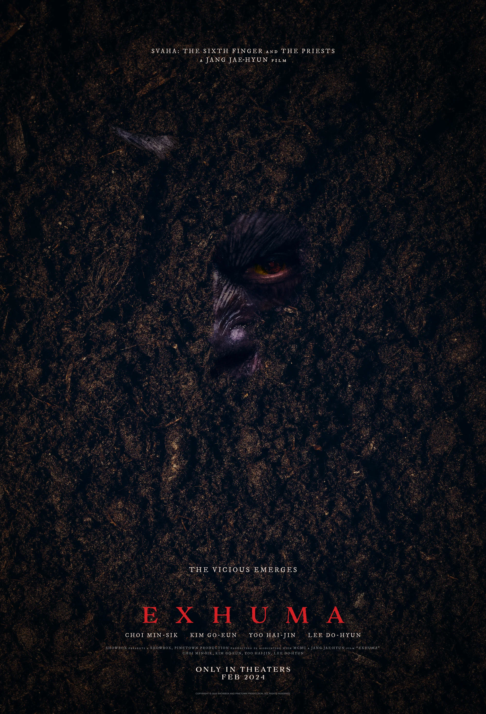

Субстанция (The Substance)
{kind=link}
Слава голливудской звезды Элизабет Спаркл осталась в прошлом, хоть она всё ещё ведёт фитнес-шоу на телевидении. Когда её передачу собираются перезапустить с ведущей помоложе, от отчаяния Элизабет решает принять инновационный препарат, создатели которого обещают невероятное преображение, но при соблюдении правила одной недели. Так на свет появляется молодая красотка Сью. Девушка начинает делать карьеру в шоу-бизнесе и вскоре решает, что семи дней ей маловато.
Винни-Пух: Кровь и мёд 2 (Winnie-the-Pooh: Blood and Honey 2)
{kind=link}
Выжив в той адской бойне, Кристофер Робин вернулся в Эшдаун и рассказал о жутких кровожадных существах, населяющих Стоакровый лес. Большинство не поверило в его историю, и теперь парень страдает от общественного презрения и посещает психотерапевта, но те, кто поверил, отправились с ружьями прочёсывать лесную чащу. Убив Пятака, народные мстители преумножают гнев Винни-Пуха, который, прихватив старых приятелей Сову и Тигру, отправляется в Эшдаун наводить свои кровавые порядки.
Ужасающий 3 (Terrifier 3)

Пять лет назад адский клоун-маньяк Арт восстал из мёртвых, выкрал из психлечебницы Викторию и заснул. А Сиенна, проведя эти годы в специализированном учреждении, собирается встретить Рождество с семьёй тёти. Она обожает младшую двоюродную сестру и рада находиться в кругу родни, но страшные видения не отпускают девушку. Как раз в это время незадачливые рабочие пробуждают Арта и демона, вселившегося в изуродованное тело Виктории, — так порождения тьмы отправляются наводить рождественскую суету среди ничего не подозревающих жителей округа Майлз.
Чужой: Ромул (Alien: Romulus)
{kind=link}
Середина XXII века. На колонизированной планете Звезда Джексона никогда не восходит солнце, и почти всё население работает в шахтах. Девушка Рэйн с андроидом Энди, которого она называет братом, собиралась переехать на другую планету, но корпорация в одностороннем порядке продлила её контракт ещё на пять лет. Возможность сбежать появляется, когда компания друзей Рэйн решает проникнуть на пролетающий мимо заброшенный космический корабль с необходимым для длительного путешествия оборудованием.
Проклятие "Зов могилы"(Pamyo)
{kind=link}
Проживающая в Лос-Анджелесе богатая семья корейского происхождения узнаёт, что страдает от духа разгневанного предка. Шаманка, её помощник, эксперт по фэншуй и владелец похоронной фирмы в Корее должны извлечь из могилы гроб с телом прадеда и, не вскрывая, кремировать его как можно быстрее. Однако жадный сотрудник больницы, куда привезли останки на временное хранение, поверив слухам о спрятанных там сокровищах, открывает гроб, что приводит к ужасающим последствиям.